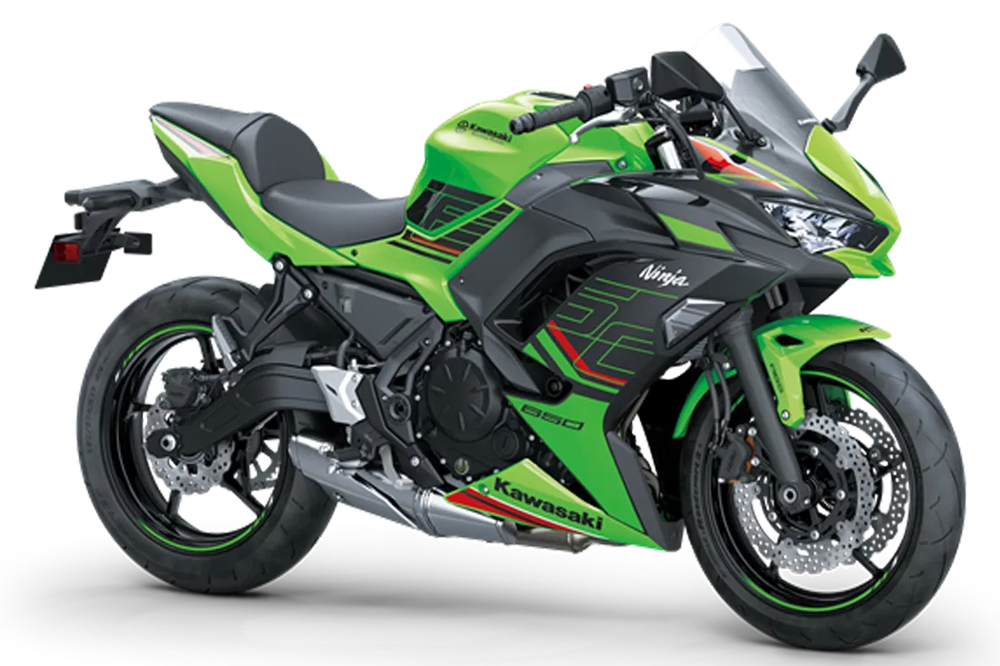
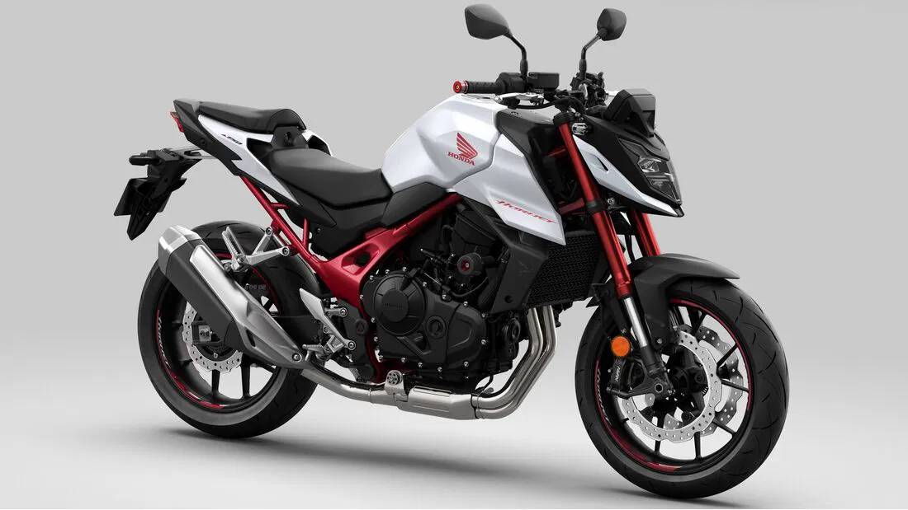

Die verschiedenen Motorrad-Modelle unterscheiden sich hauptsächlich
nach ihrer Bauweise, ihrer Form und ihrem Einsatzgebiet auf der Straße
oder im Gelände. So gibt es zum Beispiel: Straßenmaschinen wie
Allrounder, Cafe Racer, Chopper, Naked Bikes, Tourer und Cruiser
Gelände- und Sportmaschinen wie Superbikes und Supersportler, Enduros,
Scrambler und Motocross-Bikes Sonderbauformen wie Mopeds und Roller
Mehrzweckmodelle wie Crossover-Bikes und Reiseenduros. Für mehr Infos
über die Arten von Motorrädern:
Motorradtypen
Aprilia RS 660
Supersportler
Kawasaki Ninja H2R
Allgemein
Ein Supersportler ist ein ohne Rücksicht auf andere
Ausstattungsmerkmale wie Komfort oder Zuladung auf sportliches Fahren
gebautes Motorrad. Neben der maximalen Motorleistung stehen ein
optimales Verhältnis von Leistung und Fahrzeugmasse sowie eine
möglichst funktionelle und auf Beschleunigung optimierte Fahrbarkeit
im Vordergrund.
Vor- und Nachteile
Die Verkleidung schützt den Motor vor Schmutz und Steinschlag. Die
glatte, ebene Oberfläche lässt sich zudem viel einfacher reinigen als
die Ecken und Kanten eines Naked Bike. Sportbikes sind
leistungsstärker als Naked Bikes. Einige Modelle erreichen über 300
km/h, die Kawasaki H2R sogar 400 km/h. Die Verkleidungen verringern
den Luftwiderstand und machen das Motorrad windschnittiger. Außerdem
bieten Sportbikes bessere Brems- und Beschleunigungswerte sowie ein
besseres Handling, um enge Kurven auf der Rennstrecke zu meistern.
Honda CBR 650 R 2023

Kawasaki Ninja 650 2023
Vergleich der Modelle
Modell
Führerschein
Leistung
Gewicht
Sitzhöhe
Neupreis
Beschreibung
Honda CBR 650 R 2023
A2/A
95,2/48 PS
207 KG
810 MM
9.900 €
Hochdrehende Reihen 4-Zylinder Power. Der rote Bereich? Beginnt
ab 12.000 U/min. Trotzdem kommt die Alltagstauglichkeit nicht zu
kurz.
Kawasaki Ninja 650 2023
A2/A
68 PS
193 KG
790MM
8.595 €
Der agile Sporttourer im nachgeschärften Ninja Look glänzt im
Alltag mit angenehm homogenen Drehmomentverlauf, geringer
Sitzhöhe und gewaltiger Reichweite jenseits von 400km.
Aprilia RS 660
A2/A
100 PS
183 KG
825 MM
10.770 €
Eine direkt vom Rennsport abgeleitete Supersportlerin mit
schlanker Linienführung und aggressiver Optik. Was macht sie so
besonders? Hightech Technologie vom feinsten.
Naked Bikes sind „nackte“ Serienstraßenmotorräder, das heißt
Motorräder ohne Teil- oder Vollverkleidung. Sie sind für den Einsatz
auf der (Land-)Straße konzipiert. Die Fahrzeuggeometrie
(Lenkkopfwinkel, Radstand und Gewichtsverteilung) und das Fahrwerk
sind in der Regel auf Handlichkeit ausgelegt.
Vor- und Nachteile

Honda CB750 Hornet
Naked Bikes sind für ihre schlichte Ästhetik bekannt, was je nach
Vorliebe ein Vor- oder ein Nachteil sein kann. Sie verfügen über ein
besseres Drehmoment bei niedrigeren Drehzahlen, sodass Sie auf
verkehrsreichen Straßen besser beschleunigen können.
Durch das Fehlen von Verkleidungen ist der Motor mehr Schmutz und
Nässe ausgesetzt, was zu Rostbildung führen kann. Es ist wichtig, das
Motorrad vor Regen und Schnee zu schützen. Ohne Verkleidung erhöht
sich zudem der Luftwiderstand bei höheren Geschwindigkeiten, was den
Verbrauch in die Höhe treiben kann.
Besten Modelle in der Mittelklasse 2023
Trotz der sportlichen Abstimmungen und Sitzpositionen werden Nakeds
nicht nur für kurze Hatzerl gebaut. Dank etlicher
Einstellmöglichkeiten am Motorrad selbst und einer Vielzahl an
Zubehörpaketen werden auch kompromisslose Naked Bikes immer mehr zu
Allrounder.
Suzuki GSX-8STriumph Street Triple 765 RS 2023
Vergleich der Modelle
Modell
Führerschein
Leistung
Gewicht
Sitzhöhe
Neupreis
Beschreibung
Honda CB750 Hornet
A2/A
92 PS
190 KG
795 MM
8.190 €
Honda sticht wieder zu. Die Hornet wird von einem komplett neu
entwickeltem 775ccm R-2 Triebwerk angetrieben. Das 5“ TFT Display
versorgt den Piloten mit den wichtigsten Informationen.
Suzuki GSX-8S
A2/A
83 PS
202 KG
810 MM
8.900 €
Neue R-2 Motorplattform mit 270° Hubzapfenversatz. Wie üblich ist
bei der GSX-8S auch das Suzuki Intelligent Ride System verbaut und
sorgt für eine optimale Abstimmung in jedem Drehzahlbereich.
Triumph Street Triple 765 RS 2023
A2/A
80 PS
188 KG
836 MM
12.295 €
Eigentlich nur laut Hubraum in der Mittelklasse. Der
rennerprobteste Motor, der auch in der Moto 2 eingesetzt wird
katapultiert den Piloten mit einer für diese Klasse brutalen
Leistung nach vorne. Nur die hochwertigsten Komponenten kommen zum
Einsatz.